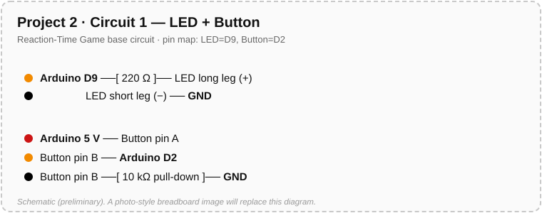
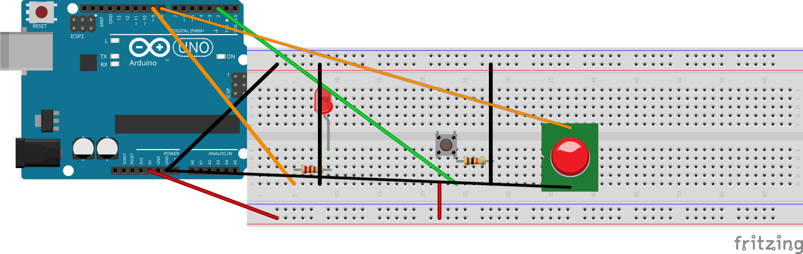
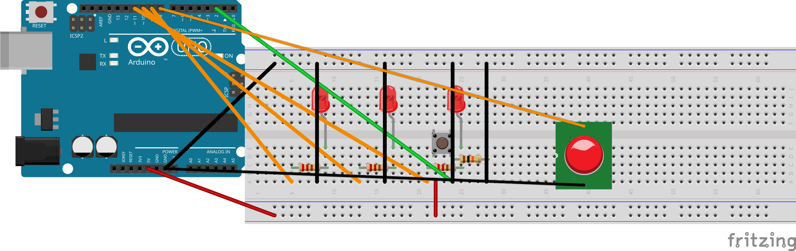
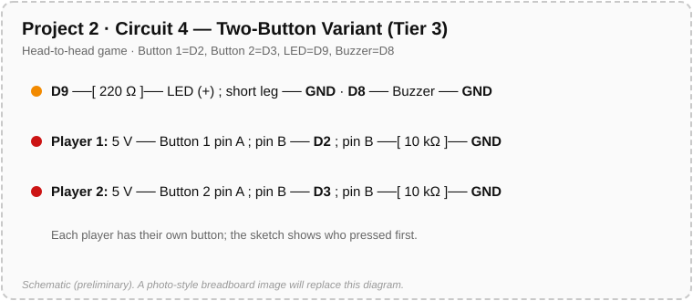

פרויקט 2 • משחק זמן תגובה • כרטיסייה לעמדת התלמיד
הכרטיסייה הזאת מראה איך לחבר את הלד, הכפתור והזמזם בפרויקט 2. שומרים אותה ליד הברדבורד. אם מתבלבלים בחיווט, קודם מסתכלים על הכרטיסייה הזאת לפני שקוראים למורה.
מעגל הבסיס של המשחק: לד אחד על חיבור דיגיטלי 9 של הארדואינו דרך נגד 220Ω, וכפתור על חיבור דיגיטלי 2 של הארדואינו עם נגד הורדה 10kΩ. זה בדיוק החיווט שעשיתם בפרויקט 1.
Arduino pin 9 ──[220 Ω]──┬── LED long leg (+)
▼
LED short leg (−) ── Arduino GND
Arduino 5V ─────────────┬── Button pin A
▼
Button pin B ──┬── Arduino pin 2
└─[10 kΩ]── Arduino GND

לד: חיבור דיגיטלי 9 של הארדואינו ← נגד 220Ω ← רגל ארוכה, רגל קצרה ← GND. כפתור: רגל A ← 5V, רגל B ← חיבור דיגיטלי 2 של הארדואינו ודרך נגד הורדה 10kΩ ← GND.
חשוב: נגד ההורדה של 10kΩ הולך בין חיבור דיגיטלי 2 של הארדואינו לבין GND, לא בין 5V לבין GND. אם מחווטים אותו בין 5V לבין GND, לחיצה על הכפתור יוצרת קצר והארדואינו יתאפס.
אותו חיווט כמו בחיווט 1, ומוסיפים את הזמזם: רגל אחת לחיבור דיגיטלי 8 של הארדואינו, הרגל השנייה ל-GND. שתי הרגליים של הזמזם נכנסות לטורים שונים בברדבורד — לא לאותו טור, זה ייצור קצר.
Arduino pin 9 ──[220 Ω]──┬── LED long leg (+)
▼
LED short leg (−) ── Arduino GND
Arduino 5V ─────────────┬── Button pin A
▼
Button pin B ──┬── Arduino pin 2
└─[10 kΩ]── Arduino GND
Arduino pin 8 ───────────── Buzzer leg 1
Arduino GND ───────────── Buzzer leg 2

זמזם: רגל אחת ← חיבור דיגיטלי 8 של הארדואינו, הרגל השנייה ← GND. הזמזם נוסף על חיווט 1 — אין לו כיוון ואין לו נגד. אף פעם לא מחברים את הזמזם ל-5V.
נחוץ רק למי שבחרו במצב המשוב של שלושה לדים בגרסה 2 (שלב 2b). מוסיפים לחיווט 2 עוד שני לדים: לד בינוני על חיבור דיגיטלי 10 של הארדואינו ולד איטי על חיבור דיגיטלי 11 של הארדואינו, כל אחד עם נגד 220Ω משלו, בדיוק כמו לד הזינוק על חיבור דיגיטלי 9 של הארדואינו.
Arduino pin 9 ──[220 Ω]──┬── LED fast long leg
▼
LED fast short leg ── Arduino GND
Arduino pin 10 ──[220 Ω]──┬── LED medium long leg
▼
LED medium short leg ── Arduino GND
Arduino pin 11 ──[220 Ω]──┬── LED slow long leg
▼
LED slow short leg ── Arduino GND
Arduino 5V ─────────────┬── Button pin A
▼
Button pin B ──┬── Arduino pin 2
└─[10 kΩ]── Arduino GND
Arduino pin 8 ───────────── Buzzer leg 1
Arduino GND ───────────── Buzzer leg 2

חיבור דיגיטלי 9 של הארדואינו ← לד מהיר · חיבור דיגיטלי 10 של הארדואינו ← לד בינוני · חיבור דיגיטלי 11 של הארדואינו ← לד איטי, כל אחד דרך נגד 220Ω ל-GND. נוסף לכפתור (חיבור דיגיטלי 2 של הארדואינו) ולזמזם (חיבור דיגיטלי 8 של הארדואינו) של חיווט 2.
נחוץ רק למי שבונים את משחק שני השחקנים בגרסה 3. מוסיפים כפתור שני על חיבור דיגיטלי 3 של הארדואינו עם נגד הורדה 10kΩ משלו, מחווט בדיוק כמו הכפתור הראשון.
Arduino 5V ─────────────┬── Button 1 pin A
▼
Button 1 pin B ──┬── Arduino pin 2
└─[10 kΩ]── Arduino GND
Arduino 5V ─────────────┬── Button 2 pin A
▼
Button 2 pin B ──┬── Arduino pin 3
└─[10 kΩ]── Arduino GND
אותו כלל של נגד הורדה: נגד 10kΩ של כל כפתור הולך בין חיבור הכניסה שלו (2 או 3) ל-GND, לא בין 5V ל-GND.

כפתור 1 ← חיבור דיגיטלי 2 של הארדואינו · כפתור 2 ← חיבור דיגיטלי 3 של הארדואינו, לכל אחד נגד הורדה 10kΩ ← GND. אותה תבנית כמו הכפתור הראשון, מספר חיבור שונה. נוסף ללד ולזמזם של מעגל הבסיס.